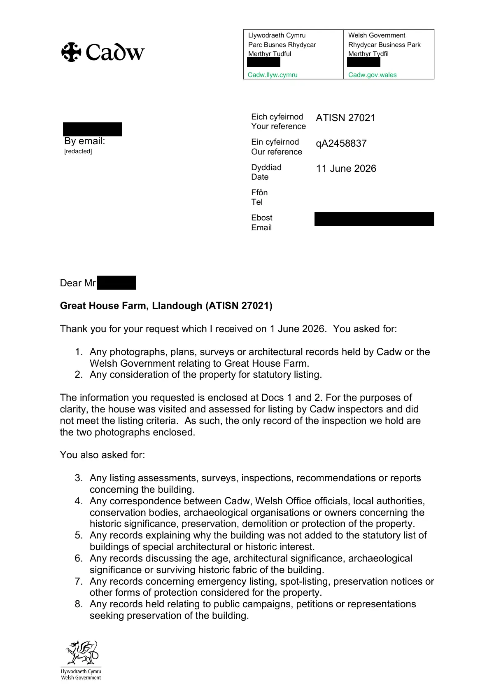

GHF-E106-R37-A1 substantive disclosure
ATISN 27021 response letter

Transcript
Llywodraeth Cymru Parc Busnes Rhydycar Merthyr Tudful [address redacted] Cadw.llyw.cymru Welsh Government Rhydycar Business Park Merthyr Tydfil [address redacted] Cadw.gov.wales Requester By email: Eich cyfeirnod Your reference ATISN 27021 Ein cyfeirnod Our reference qA2458837 Dyddiad Date 11 June 2026 Ffôn Tel Ebost Email [email redacted] Dear Requester, Great House Farm, Llandough (ATISN 27021) Thank you for your request which I received on 1 June 2026. You asked for: 1. Any photographs, plans, surveys or architectural records held by Cadw or the Welsh Government relating to Great House Farm. 2. Any consideration of the property for statutory listing. The information you requested is enclosed at Docs 1 and 2. For the purposes of clarity, the house was visited and assessed for listing by Cadw inspectors and did not meet the listing criteria. As such, the only record of the inspection we hold are the two photographs enclosed. You also asked for: 3. Any listing assessments, surveys, inspections, recommendations or reports concerning the building.
Read more
4. Any correspondence between Cadw, Welsh Office officials, local authorities, conservation bodies, archaeological organisations or owners concerning the historic significance, preservation, demolition or protection of the property. 5. Any records explaining why the building was not added to the statutory list of buildings of special architectural or historic interest. 6. Any records discussing the age, architectural significance, archaeological significance or surviving historic fabric of the building. 7. Any records concerning emergency listing, spot-listing, preservation notices or other forms of protection considered for the property. 8. Any records held relating to public campaigns, petitions or representations seeking preservation of the building. [redacted] Llywodraeth Cymru Parc Busnes Rhydycar Merthyr Tudful [address redacted] Cadw.llyw.cymru Welsh Government Rhydycar Business Park Merthyr Tydfil [address redacted] Cadw.gov.wales 9. In your follow-up email of 7 June you asked for all records, correspondence, assessments, site notes, photographs, internal memos, or communications relating to Great House Farm / Ty Mawr from the 1970s to 1990s. I am interpreting the timeframe here as 1 January 1970 to 31 December 1999. Following a search of our paper and electronic records, apart from the two photographs, I have established that the information you require is not held by the Welsh Government. Any other associated records would have been either transferred to the Royal Commission on the Ancient & Historical Monuments of Wales for permanent preservation, or destroyed under the Public Record Act 1958. If you are dissatisfied with the Welsh Government’s handling of your request, you can ask for an internal review within 40 working days of the date of this response. Requests for an internal review should be addressed to the Welsh Government’s Freedom of Information Officer at Information Rights Unit, Welsh Government, [address redacted] Please remember to quote the ATISN reference number above. You also have the right to complain to the Information Commissioner. The Information Commissioner can be contacted at: Information Commissioner’s Office, [address redacted] that the Commissioner will not normally investigate a complaint until it has been through our own internal review process. Yours Sincerely, Mike Weatherhead Casework Team Leader Annex A Great House Farm, Llandough (ATISN 27021) Index of Documents Released Doc Description Doc 1 Great House Farm inspection photo – dated 29/07/1988 Doc 2 Barn at Great House Farm inspection photo – dated 29/07/1988
Artifact description
Provides two 1988 survey photographs of the farmhouse and barn along with a written response letter.
| Catalogue ID | GHF-E106-R37-A1 |
|---|---|
| What it is | PDF document from Welsh Government / Cadw. Attached to an email received on 11 June 2026, their reference ATISN 27021. 2 pages. |
| From | Welsh Government / Cadw |
| Email received | 11 June 2026 |
| Their reference | ATISN 27021 |
| Pages | 2 |
| File | ATISN 27021 - 2026-06-11 - Response Letter.pdf (138 KB) |
| State | Read |
Our integration
Part of the FOI internal review thread with Welsh Government / Cadw opened 17 May 2026. The thread's standing classification is “partial”. Statutory time: met.
Concern to test: whether this reply answers the question as asked, or a narrower one. Not checked against the original request wording here.
What cuts against the case: the body disclosed material, which is the opposite of a refusal; what it disclosed is shown here as sent.
Working-theory relevance · 29 October 2026: This Cadw response is a records-disclosure artefact. It can establish what the department said it held, searched for or disclosed about the 1988 survey/listing material; it does not establish land ownership or the validity of the title chain. Any significance to the working theory depends on the actual attachments, their dates, the search scope and the decision file—not the response label alone. Theory and test schedule.
Related: GHF-E106-R101-A1 — ATISN 27021 Review Ressponse.pdf · GHF-E106-R37-A2 — ATISN 27021 doc 1: farmhouse survey photo, 29 July 1988 · GHF-E106-R37-A3 — ATISN 27021 doc 2: barn survey photo, 29 July 1988 · GHF-E106-R95-A1 — GGAT assessment of Great House Farmhouse (filed August 1990) · GHF-E106-R97-A1 — Cadw survey photograph: barn, 29 July 1988 · GHF-E106-R98-A1 — Cadw survey photograph: farmhouse, 29 July 1988 · GHF-E106-R99-A1 — Internal Review Acknowledgement Letter.pdf · The covering email · What They Don’t Say: WTDS-5c5b715a-1, WTDS-5c5b715a-2, WTDS-5c5b715a-3, WTDS-5c5b715a-4 · EV-0489 in the evidence catalogue · Timeline · Disclosure Dartboard